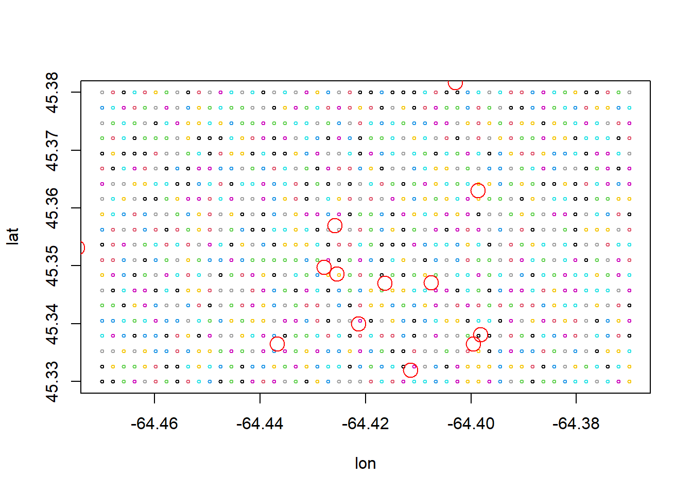

A question was thrown into the ether a few days ago that gave me a reason to learn a little bit of R’s terra package. The answer, itself, turned out to be not overly complicated (in spite of a few frustrating hurdles). However, what I extracted from this was one more brick in my wall against the blind use of Universal Transverse Mercator (UTM). Through a worked example, I hope to instill this in you!
The question: If I have a grid of points that each contain some value from an observing system – say sea surface temperature – and a bunch of fish detections within that grid, how do I extract the temperature values at each one of those detections?
Create example data
First, let’s make up our sampled grid. I’ll make it 20 rows tall and 50 columns wide for no real reason other than the rectangle it makes looks kinda good.
I’m picking a region on the east coast of Canada. You would be able to see the distortion I’ll be talking about in areas farther south, but it’s more prominent the farther you move toward the pole.
Then, I’ll randomly draw values from a poisson distribution solely to keep things positive integers.
Now, I’ll create a handful of fish “detections”. I’m not being too exacting here, so some are likely to not even be within our grid.
# Random detectionsdets <-data.frame(lon =rnorm(20, -64.42, 0.02),lat =rnorm(20, 45.35, 0.02))plot(lat ~ lon, data = grid_data,col = grid_data$data_value, cex =0.5)points(dets$lon, dets$lat, col ='red', cex =2)

Convert to spatial objects
Next, convert the data frames into spatial objects using the terra package. We’ll do this by first telling terra that the grid are points in WGS84. terra::vect turns a data frame (x) into a vector geometry (points, lines, and polygons) defined by the lon and lat columns in the given coordinate reference system. The crs we’ve provided is in PROJ-string notation, letting terra::vect know that we want our longitude/latitude coordinates to be in the “datum” of WGS84.
Seems like it’s not that easy to convert a gridded SpatVector (what was created by terra::vect) to a SpatRaster. I’d love to be corrected on this, so let me know if I’m wrong!
What we can do, however, is convert the originial data frame directly into a raster.
ID data_value
1 1 NA
2 2 NA
3 3 14
4 4 22
5 5 NA
6 6 22
Seems to have worked. The ID column refers to the index of the detection and data_value refers to the value extracted from our rasterized grid. Any NA in the data_value column indicates that the detection was not within the grid’s bounds.
Aside for those with incomplete grids
Note that this only works if your gridded data has all latitude and longitude combinations. This often isn’t the case: there may be land that, in fisheries, should have no value, or maybe there’s a precision issue wherein “38.123456” won’t be read as “38.12345” even though they’re basically the same. This will be a pretty big tangent, so skip ahead if you want to get back to the proejction stuff!
The essence of what we want to do here is to create a blank raster and tell the program to use the values of our grid to fill the value for each raster cell. In order to do this, we need to tell terra what the extent of the raster should be, then carve up the rectangle with those dimensions into little blocks.
When we think about an even grid like the one we created above, note that our extent isn’t the values, it’s the values… plus a little bit. We’ll find the nudge by taking the range of the latitude or longitude values, dividing it by the number of rows or columns we wanted, then dividing that in half.
lon_nudge <-# range of values... ((max(grid_data$lon) -min(grid_data$lon)) /# divided by the number of columns (declared above) n_cols) /# divided by two2lat_nudge <- ((max(grid_data$lat) -min(grid_data$lat)) / n_rows) /2
![]()